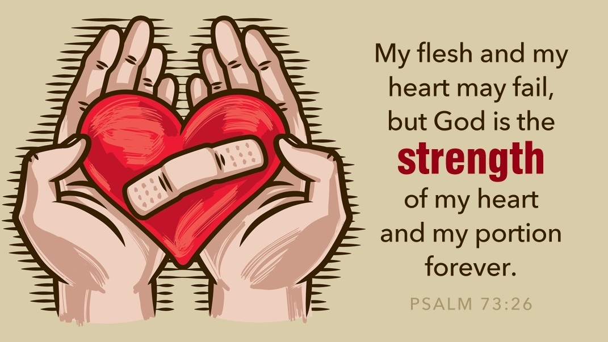
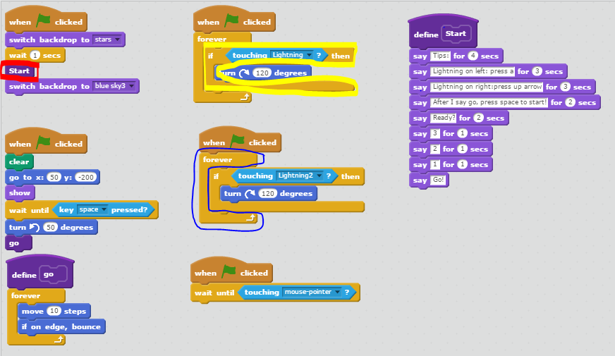
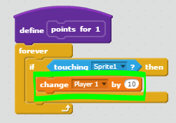

amy amaya.

I like to read and draw. My favorite color is blue. When I'm not at school, I'm either reading or thinking.I love to go to church.I am sixteen years old and I have a twin.
Look at the command outlined in dark blue! These represent loops in coding! Loops are known to be sequences that are continually repeated until a certain condition is achieved in a program. Next the command outlined in yellow is called a conditional!Conditionals are also known as "if" statements. If statements or conditional expressions will execute different results depending on the input received or typed/pushed/clicked by the user.In other words: if a condition(what you want your program to do!) is met, or "true,",a desired output is executed from that conditional. Look at the second picture. There outlined in lime green is something called a variable.(These can be placed within loops and conditionals)A variable is a value that can change, depending on conditionals or information passed to the program.They act as "storage locations" for data in a program. They also have the job of receiving certain input from the user in the beginning to use it later or at the end of the run. When a certain game will need to track a player or several player's scores at the same time,more often than not, variables are set to 0 in the beginning and either decrease/increase by a certain number put in place(in order to keep scores "clean").Finally functions are ones that look like the outlined command in red! Functions are known to make programming easier for the daily coder. The reason is because they shorten a blocks of code that may have to be repeated more than once.One must first "Define" their block of code and then in the middle provide the steps or certain commands that must be followed every time the function goes to work. In simple terms, they encapsulate a whole bunch of lines of code into a single organized line.
 